itemmodels
Class info
Classes
| Name | Children | Inherits |
|---|---|---|
| ActionsModel prettyqt.itemmodels.actionsmodel Table model to display a list of QActions. |
||
| AppearanceProxyModel prettyqt.itemmodels.proxies.appearanceproxymodel Proxy model for changing the "style roles" of the source model. |
||
| AstModel prettyqt.itemmodels.astmodel Tree model to display an Abstract syntax tree. |
||
| BaseDataclassModel prettyqt.itemmodels.basedataclassmodel Base table model for a list of dataclass-like instances. |
||
| BaseFieldsModel prettyqt.itemmodels.basefieldsmodel Base table model showing the fields of a single dataclass-like instance. |
||
| BaseXmlModel prettyqt.itemmodels.xmlmodel |
||
| ChangeHeadersProxyModel prettyqt.itemmodels.proxies.changeheadersproxymodel Proxy model for changing the header data (either horizontal or vertical). |
||
| ColumnItem prettyqt.itemmodels.columnitemmodel Determines how an object attribute is shown. |
|
|
| ColumnItemModel prettyqt.itemmodels.columnitemmodel TreeModel with columns defined by ColumnItem classes. |
|
|
| ColumnJoinerProxyModel prettyqt.itemmodels.proxies.columnjoinerproxymodel Proxy model which joins the contents of several columns. |
||
| ColumnOrderProxyModel prettyqt.itemmodels.proxies.columnorderproxymodel Proxy model which reorders the columns of the source model. |
||
| ColumnTableModel prettyqt.itemmodels.columnitemmodel List-based table model with columns defined by ColumnItem classes. |
|
|
| DataClassFieldsModel prettyqt.itemmodels.dataclassfieldsmodel Table model to display the fields and their metadata of an dataclass. |
||
| DataClassModel prettyqt.itemmodels.dataclassmodel Table model to display a list of dataclasses. |
||
| FlattenTreeProxyModel prettyqt.itemmodels.proxies.flattentreeproxymodel Proxy model to flatten a tree to appear like a table. |
||
| FrameInfoModel prettyqt.itemmodels.frameinfomodel Model to display a list of inspect.Frameinfos / inspect.Tracebacks. |
||
| FuzzyFilterProxyModel prettyqt.itemmodels.proxies.fuzzyfilterproxymodel A FilterProxyModel which sorts the results based on a matching score. |
||
| HighlightMouseProxyModel prettyqt.itemmodels.proxies.highlightmouseproxymodel Proxy model which highlights all cells with same row / column as mouse position. |
||
| ImportlibTreeModel prettyqt.itemmodels.importlibdistributionmodel Model showing the dependency tree of a distribution. |
||
| ItemModelResolver prettyqt.itemmodels.itemmodelresolver Allows globbing ItemModels. |
|
|
| JsonModel prettyqt.itemmodels.jsonmodel |
||
| LayoutHierarchyModel prettyqt.itemmodels.widgethierarchymodel Tree model showing the layout hierarchy of widgets. |
|
|
| LinkedSelectionModel prettyqt.itemmodels.proxies.linkedselectionmodel An ItemSelectionModel which link selections between item models. |
||
| ListMixin prettyqt.itemmodels.listmixin Mixin for flat models which are backed by a python list (`self.items`). |
||
| LogRecordModel prettyqt.itemmodels.logrecordmodel Model to display a list of logging.LogRecords. |
||
| MappingModel prettyqt.itemmodels.mappingmodel Table model for a list of mappings. Columns are the keys of the first mapping. |
||
| MeltProxyModel prettyqt.itemmodels.proxies.meltproxymodel Proxy model to unpivot a table from wide format to long format. |
|
|
| ModelIndexModel prettyqt.itemmodels.modelindexmodel Table model for displaying a the data of a list of ModelIndexes. |
||
| ModelMixin prettyqt.itemmodels.modelmixin |
||
| ModuleInfoModel prettyqt.itemmodels.moduleinfomodel Tree Model to display a module hierarchy (using pkgutil). |
||
| MultiColumnFilterProxyModel prettyqt.itemmodels.proxies.multicolumnfilterproxymodel A SortFilterProxyModel which filters based on multiple columns in one go. |
||
| NestedItem prettyqt.itemmodels.nesteditem |
||
| NestedModel prettyqt.itemmodels.nestedmodel |
||
| ParentClassTreeModel prettyqt.itemmodels.classtreemodel Tree model to display the parent class tree of a python class. |
|
|
| PredicateFilterProxyModel prettyqt.itemmodels.proxies.predicatefilterproxymodel A simple filter proxy model with settable filter predicates. |
||
| ProxyMapper prettyqt.itemmodels.proxies.proxymapper Class to map indexes / ItemSelections from one proxy to another. |
||
| PythonObjectTreeModel prettyqt.itemmodels.pythonobjecttreemodel |
||
| QObjectPropertiesModel prettyqt.itemmodels.qobjectpropertiesmodel |
||
| RangeFilterProxyModel prettyqt.itemmodels.proxies.rangefilterproxymodel |
||
| RegexMatchesModel prettyqt.itemmodels.regexmatchesmodel Model to display a list of re.Matches. |
||
| SelectionMixin prettyqt.itemmodels.selectionmixin |
||
| ShortcutsModel prettyqt.itemmodels.shortcutsmodel Model to display a list of gui.QShortcuts. |
||
| SliceAppearanceProxyModel prettyqt.itemmodels.proxies.sliceappearanceproxymodel |
||
| SliceChangeFlagsProxyModel prettyqt.itemmodels.proxies.slicechangeflagsproxymodel Proxy model to selectively change the ItemFlags of the source model. |
||
| SliceChangeIconSizeProxyModel prettyqt.itemmodels.proxies.slicechangeiconsizeproxymodel Proxy model which changes the icon size of the Decoration role. |
||
| SliceCheckableProxyModel prettyqt.itemmodels.proxies.slicecheckableproxymodel Proxy model to make a model checkable. |
||
| SliceCheckableTreeProxyModel prettyqt.itemmodels.proxies.slicecheckableproxymodel Proxy model to make a tree model checkable. |
||
| SliceColorCategoriesProxyModel prettyqt.itemmodels.proxies.slicecolorcategoriesproxymodel Proxy model to apply coloring to categories. |
||
| SliceColorValuesProxyModel prettyqt.itemmodels.proxies.slicecolorvaluesproxymodel Model to color cells of a numerical table based on their value. |
||
| SliceDisplayTextProxyModel prettyqt.itemmodels.proxies.slicedisplaytextproxymodel Proxy model to convert and format non-str values for the DisplayRole. |
||
| SliceFilterProxyModel prettyqt.itemmodels.proxies.slicefilterproxymodel Proxy model to filter an item view based on python slicing syntax. |
|
|
| SliceHighlightCurrentProxyModel prettyqt.itemmodels.proxies.slicehighlightcurrentproxymodel Proxy model which highlights all cells with same data as current index. |
||
| SliceIdentityProxyModel prettyqt.itemmodels.proxies.sliceidentityproxymodel Base model for slice proxy models. |
|
|
| SliceMapRoleProxyModel prettyqt.itemmodels.proxies.slicemaproleproxymodel Proxy model for mapping one role to another. |
||
| SliceToMarkdownProxyModel prettyqt.itemmodels.proxies.slicetomarkdownproxymodel Proxy model which transforms cell contents to markdown. |
||
| SliceValueTransformationProxyModel prettyqt.itemmodels.proxies.slicevaluetransformationproxymodel A proxy model which transforms cell contents based on a Callable. |
||
| StorageInfoModel prettyqt.itemmodels.storageinfomodel Model to display a list of core.QStorageInfos. |
||
| SubClassTreeModel prettyqt.itemmodels.classtreemodel Model to display the subclass tree of a python class. |
|
|
| SubsetFilterProxyModel prettyqt.itemmodels.proxies.subsetfilterproxymodel A FilterProxyModel to filter based on slices, ranges, indexes or Callables. |
||
| TableToListProxyModel prettyqt.itemmodels.proxies.tabletolistproxymodel Proxy model to flatten a table to a list. |
|
|
| TreeModel prettyqt.itemmodels.treemodel TreeModel which is used as a base for most TreeModels implemented. |
|
|
| TupleTreeModel prettyqt.itemmodels.tupletreemodel Base Tree Model to display a dict[tuple[Any], str] data structure. |
||
| UnmeltProxyModel prettyqt.itemmodels.proxies.unmeltproxymodel Proxy model to pivot a table from long format to wide format. |
|
|
| ValueFilterProxyModel prettyqt.itemmodels.proxies.valuefilterproxymodel Proxy model for filtering based on non-str values. |
||
| WidgetHierarchyModel prettyqt.itemmodels.widgethierarchymodel Tree model showing the child tree of a QObject. |
|
|
| WidgetsDetailsModel prettyqt.itemmodels.widgetsdetailsmodel |
||
| XmlModel prettyqt.itemmodels.xmlmodel Xml model for the builtin ElementTree. Child items are created lazily. |
🛈 DocStrings
Module containing ItemModels for common data structures.
PrettyQt includes a large amount of ItemModels for Qt-based types, Python built-in types as well as for different data structures of external libraries.
- All models are proper views on data structures, not populated StandardItemModels.
- Boolean values are always handled via CheckState role, both for editing and displaying.
- Some of the models should be used in conjunction with the EditorDelegate. That delegate supports editing a large amount of different datatypes and should be the preferred choice for most models.
- In general, the models are unstyled (with some few exceptions. Styling should be done via the extensive proxy system which is baked into PrettyQt.
ActionsModel
Bases: ColumnTableModel
Table model to display a list of QActions.
All properties of the Action can be edited.
Source code in prettyqt/itemmodels/actionsmodel.py
AppearanceProxyModel
Bases: IdentityProxyModel
Proxy model for changing the "style roles" of the source model.
In contrast to SliceAppearanceProxyModel, this one works in a more "static" way, meaning that you can change the color / font / alignment of indexes via model.setData even when the source model is not item-based (like a StandardItemModel).
Example:
model = MyModel()
proxy = itemmodels.AppearanceProxyModel()
proxy.set_source_model(model)
proxy.setData(proxy.index(0, 0), gui.QColor("red"), role=constants.FOREGROUND_ROLE)
table.set_model(proxy)
table.show()
Source code in prettyqt/itemmodels/proxies/appearanceproxymodel.py
9 10 11 12 13 14 15 16 17 18 19 20 21 22 23 24 25 26 27 28 29 30 31 32 33 34 35 36 37 38 39 40 41 42 43 44 45 46 47 48 49 50 51 52 53 54 55 56 57 58 59 60 61 62 63 64 65 66 67 68 69 70 71 72 73 74 75 76 77 78 79 80 81 82 83 84 85 86 87 88 89 90 91 92 93 94 95 96 97 98 99 100 101 102 103 104 105 106 107 108 109 110 111 112 113 114 115 116 117 118 119 120 121 122 123 124 125 126 127 128 129 130 131 132 133 134 135 136 137 138 139 140 141 142 143 144 145 146 147 148 149 150 151 152 153 154 155 156 157 158 159 160 161 162 163 164 165 166 167 168 169 170 171 172 173 174 175 176 177 178 179 180 181 182 183 184 185 186 187 188 189 190 191 192 193 194 195 196 197 198 199 200 201 202 203 204 205 | |
AstModel
Bases: TreeModel
Tree model to display an Abstract syntax tree.
The model shows a tree of all nodes from an
abstract syntax tree
They are part of the builtin ast module.
Example:
import ast
view = TreeView()
code = pathlib.Path(__file__).read_text("utf-8)
tree = ast.parse(code)
model = AstModel(tree)
view.set_model(model)
Source code in prettyqt/itemmodels/astmodel.py
47 48 49 50 51 52 53 54 55 56 57 58 59 60 61 62 63 64 65 66 67 68 69 70 71 72 73 74 75 76 77 78 79 80 81 82 83 84 85 86 87 88 89 90 91 92 93 94 95 96 97 98 99 100 101 102 103 104 105 106 107 108 109 110 111 112 113 114 115 116 117 118 119 120 121 122 123 124 125 126 127 128 129 130 131 132 133 134 135 136 137 138 139 140 141 142 143 144 145 146 147 148 149 150 151 152 153 154 155 156 157 158 159 160 161 162 163 164 165 166 167 168 169 170 171 172 173 174 175 176 177 178 179 180 181 182 183 184 185 186 187 188 189 190 191 192 193 194 195 196 197 198 199 200 201 202 203 204 205 206 207 208 209 210 211 212 213 214 215 216 217 218 219 220 221 222 223 224 225 226 227 228 229 230 231 232 233 234 235 236 237 238 239 240 | |
rename_variable(old: str, new: str, root_tree: ast.AST | None = None, ignore: list[str] | None = None, scope: list[str] | None = None)
Rename all identifiers named old to new.
Parameters:
| Name | Type | Description | Default |
|---|---|---|---|
old
|
str
|
identifier to rename |
required |
new
|
str
|
new name |
required |
root_tree
|
AST | None
|
tree to modify (default: the tree of the model) |
None
|
ignore
|
list[str] | None
|
names of function / class scopes to leave untouched |
None
|
scope
|
list[str] | None
|
initial scope stack |
None
|
Source code in prettyqt/itemmodels/astmodel.py
set_ast(ast_tree: ast.AST | str = '')
Set an AST tree for the model.
Parameters:
| Name | Type | Description | Default |
|---|---|---|---|
ast_tree
|
AST | str
|
Abstract syntax tree |
''
|
Source code in prettyqt/itemmodels/astmodel.py
BaseDataclassModel
Bases: AbstractTableModel
Base table model for a list of dataclass-like instances.
Rows are the instances, columns are the fields of their closest common ancestor.
Subclasses need to implement get_fields and should implement _is_frozen.
Source code in prettyqt/itemmodels/basedataclassmodel.py
15 16 17 18 19 20 21 22 23 24 25 26 27 28 29 30 31 32 33 34 35 36 37 38 39 40 41 42 43 44 45 46 47 48 49 50 51 52 53 54 55 56 57 58 59 60 61 62 63 64 65 66 67 68 69 70 71 72 73 74 75 76 77 78 79 80 81 82 83 84 85 86 87 88 89 90 91 92 93 94 95 96 97 98 99 100 101 102 103 104 105 106 107 108 109 110 111 112 113 114 115 116 117 118 119 120 121 122 123 124 125 126 127 128 129 130 131 | |
rowCount(parent: core.ModelIndex | None = None) -> int
Override for AbstractitemModel base method.
BaseFieldsModel
Bases: AbstractTableModel
Base table model showing the fields of a single dataclass-like instance.
Each row is a field (field name in the vertical header), column 0 contains the (editable) value, the other columns contain field metadata.
Source code in prettyqt/itemmodels/basefieldsmodel.py
15 16 17 18 19 20 21 22 23 24 25 26 27 28 29 30 31 32 33 34 35 36 37 38 39 40 41 42 43 44 45 46 47 48 49 50 51 52 53 54 55 56 57 58 59 60 61 62 63 64 65 66 67 68 69 70 71 72 73 74 75 76 77 78 79 80 81 82 83 84 85 86 87 88 89 90 91 92 93 94 95 96 97 98 99 100 101 102 103 104 105 106 107 108 109 110 111 112 113 114 115 116 117 118 119 120 121 122 123 124 125 126 127 128 129 130 131 132 133 134 135 | |
rowCount(parent: core.ModelIndex | None = None) -> int
Override for AbstractitemModel base method.
ChangeHeadersProxyModel
Bases: IdentityProxyModel
Proxy model for changing the header data (either horizontal or vertical).
Header data can either be changed by passing a list with same length as source length or by passing a dictionary with index as key and new value as value (Example: {1: "abc", 3: "def"} changes section 1 to "abc" and section 3 to "def") Apart from the regular use case of changing the text, the other roles can be changed, too.
Example
table.proxifier.change_headers(
header=["x", "y", "z"],
orientation=constants.HORIZONTAL,
role=constants.DISPLAY_ROLE,
)
table.show()
# or
model = MyModel()
proxy = ChangeHeadersProxyModel(
header=["x", "y", "z"], orientation=constants.VERTICAL
)
proxy.set_source_model(model)
table.set_model(proxy)
table.show()
Source code in prettyqt/itemmodels/proxies/changeheadersproxymodel.py
ColumnItem
Determines how an object attribute is shown.
Source code in prettyqt/itemmodels/columnitemmodel.py
ColumnItemModel
Bases: ColumnItemModelMixin, TreeModel
TreeModel with columns defined by ColumnItem classes.
Source code in prettyqt/itemmodels/columnitemmodel.py
ColumnJoinerProxyModel
Bases: IdentityProxyModel
Proxy model which joins the contents of several columns.
The columns are joined based on a formatter and appended to the end of the model as a new column.
The formatter must look like {0} - {1}: {4}.
The format codes are then populated with the content of given columns,
in this case it would be {Text of column 0} - {Text of Column 1}: {Text of Column 4}
Example
table.proxifier.join_columns(formatter="{0} - {2}", header="New column")
table.show()
# or
model = MyModel()
proxy = ColumnJoinerProxyModel()
proxy.set_source_model(model)
proxy.add_column(formatter="{0} - {2}", header="New column")
proxy.add_column(formatter="{4}: {5}", header="Another column")
table.set_model(proxy)
table.show()
data = dict(first=["John", "Mary"], last=["Doe", "Bo"])
model = gui.StandardItemModel.from_dict(data)
table = widgets.TableView()
table.set_model(model)
# table.proxifier.add_column(header="Full name", formatter="{1}, {0}")
table.show()
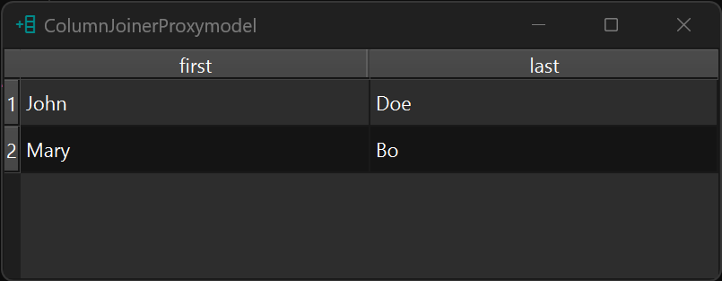
data = dict(first=["John", "Mary"], last=["Doe", "Bo"])
model = gui.StandardItemModel.from_dict(data)
table = widgets.TableView()
table.set_model(model)
table.proxifier.add_column(header="Full name", formatter="{1}, {0}")
table.show()
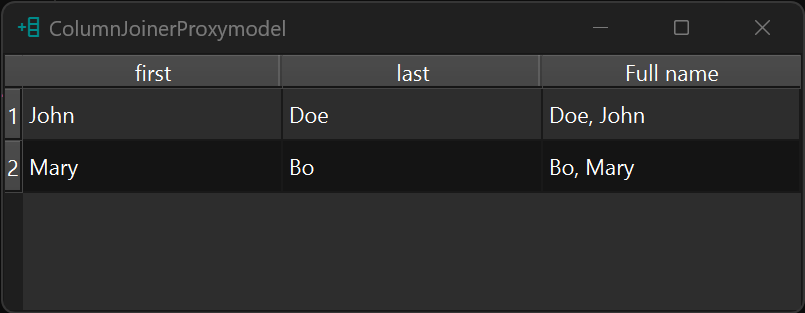
Source code in prettyqt/itemmodels/proxies/columnjoinerproxymodel.py
19 20 21 22 23 24 25 26 27 28 29 30 31 32 33 34 35 36 37 38 39 40 41 42 43 44 45 46 47 48 49 50 51 52 53 54 55 56 57 58 59 60 61 62 63 64 65 66 67 68 69 70 71 72 73 74 75 76 77 78 79 80 81 82 83 84 85 86 87 88 89 90 91 92 93 94 95 96 97 98 99 100 101 102 103 104 105 106 107 108 109 110 111 112 113 114 115 116 117 118 119 120 121 122 123 124 125 126 127 128 129 130 131 132 133 134 135 136 137 138 139 140 141 142 143 144 145 146 147 148 149 150 151 152 153 154 155 156 157 158 159 160 161 162 163 164 165 166 167 168 169 170 171 172 173 174 175 176 177 178 179 180 181 182 183 184 185 186 187 188 189 190 191 192 193 194 195 196 197 198 199 200 201 202 203 204 205 206 207 | |
add_mapping(header: str, formatter: str, flags: constants.ItemFlag | None = None)
Add a new column to the table.
Parameters:
| Name | Type | Description | Default |
|---|---|---|---|
header
|
str
|
Label used for the section header. |
required |
formatter
|
str
|
String formatter (example "{0}: {1}") |
required |
flags
|
ItemFlag | None
|
ItemFlags for new column |
None
|
Source code in prettyqt/itemmodels/proxies/columnjoinerproxymodel.py
ColumnOrderProxyModel
Bases: IdentityProxyModel
Proxy model which reorders the columns of the source model.
Proxy model which reorders / hides the columns of the source model by passing a list containing the new order. Order indexes can either be an integer or the Column header. If not all indexes are part of the list, then the missing sections will be hidden.
Example
table.proxifier.reorder_columns(order=[3, 2, 0])
table.show()
# or
model = MyModel()
proxy = ColumnOrderProxyModel(order=[3, 2, 0])
proxy.set_source_model(model)
table.set_model(proxy)
table.show()
Source code in prettyqt/itemmodels/proxies/columnorderproxymodel.py
10 11 12 13 14 15 16 17 18 19 20 21 22 23 24 25 26 27 28 29 30 31 32 33 34 35 36 37 38 39 40 41 42 43 44 45 46 47 48 49 50 51 52 53 54 55 56 57 58 59 60 61 62 63 64 65 66 67 68 69 70 71 72 73 74 75 76 77 78 79 80 81 82 83 84 85 86 87 88 89 90 91 92 93 94 95 96 97 98 99 100 101 102 103 104 105 106 107 108 109 110 111 112 113 114 115 116 117 118 119 120 121 122 123 124 125 126 127 128 129 130 131 132 133 134 135 136 137 138 139 140 141 142 143 144 145 146 147 148 149 150 151 152 153 154 155 156 157 158 159 160 161 162 163 164 165 166 | |
ColumnTableModel
Bases: ListMixin, ColumnItemModelMixin, AbstractTableModel
List-based table model with columns defined by ColumnItem classes.
Source code in prettyqt/itemmodels/columnitemmodel.py
DataClassFieldsModel
Bases: BaseFieldsModel
Table model to display the fields and their metadata of an dataclass.
Frozen dataclasses are read-only, otherwise the data can be modified.
Source code in prettyqt/itemmodels/dataclassfieldsmodel.py
DataClassModel
Bases: BaseDataclassModel
Table model to display a list of dataclasses.
Source code in prettyqt/itemmodels/dataclassmodel.py
FlattenTreeProxyModel
Bases: AbstractProxyModel
Proxy model to flatten a tree to appear like a table.
Example
Original model:
table = widgets.TreeView()
source_model = itemmodels.ParentClassTreeModel(widgets.Frame)
table.set_model(source_model)
# table.proxifier.flatten()
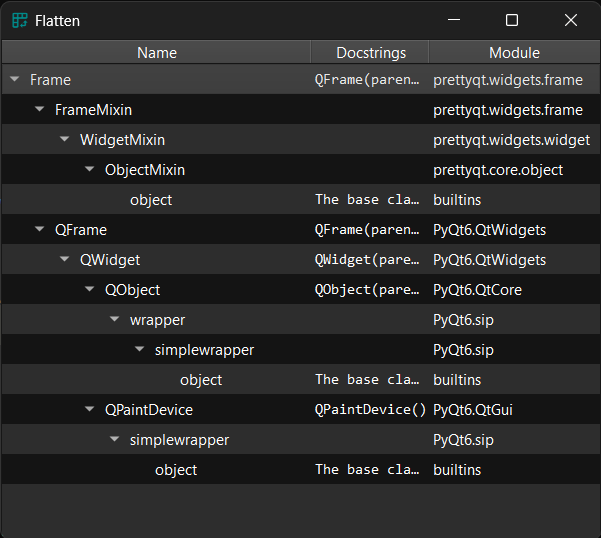
table = widgets.TreeView()
source_model = itemmodels.ParentClassTreeModel(widgets.Frame)
table.set_model(source_model)
table.proxifier.flatten()
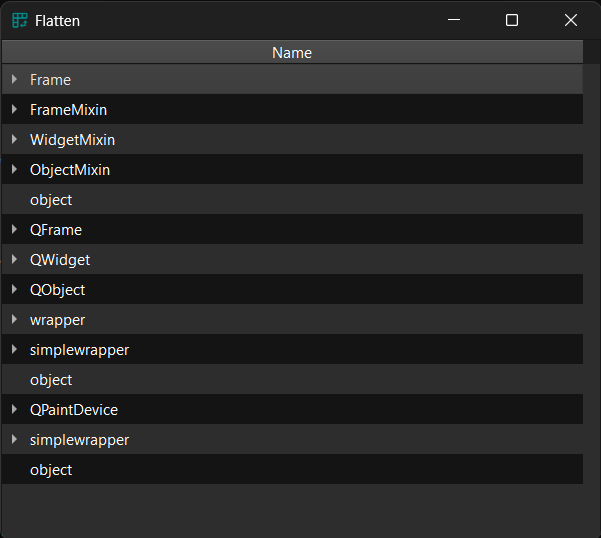
table = widgets.TreeView()
source_model = itemmodels.ParentClassTreeModel(widgets.Frame)
table.set_model(source_model)
table.proxifier.flatten(show_path=True)
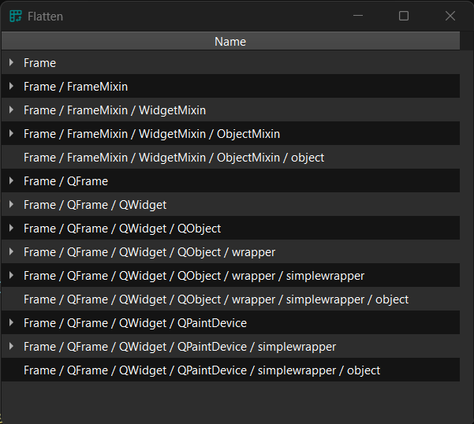
table = widgets.TreeView()
source_model = itemmodels.ParentClassTreeModel(widgets.Frame)
table.set_model(source_model)
table.proxifier.flatten(leaves_only=True)
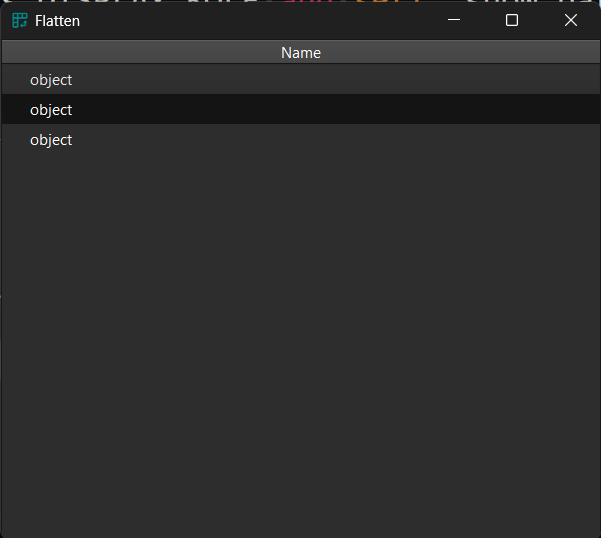
table.proxifier.flatten()
# or
proxy = itemmodels.FlattenTreeProxyModel()
proxy.set_source_model(model)
table.set_model(proxy)
Source code in prettyqt/itemmodels/proxies/flattentreeproxymodel.py
6 7 8 9 10 11 12 13 14 15 16 17 18 19 20 21 22 23 24 25 26 27 28 29 30 31 32 33 34 35 36 37 38 39 40 41 42 43 44 45 46 47 48 49 50 51 52 53 54 55 56 57 58 59 60 61 62 63 64 65 66 67 68 69 70 71 72 73 74 75 76 77 78 79 80 81 82 83 84 85 86 87 88 89 90 91 92 93 94 95 96 97 98 99 100 101 102 103 104 105 106 107 108 109 110 111 112 113 114 115 116 117 118 119 120 121 122 123 124 125 126 127 128 129 130 131 132 133 134 135 136 137 138 139 140 141 142 143 144 145 146 147 148 149 150 151 152 153 154 155 156 157 158 159 160 161 162 163 164 165 166 167 168 169 170 171 172 173 174 175 176 177 178 179 180 181 182 183 184 185 186 187 188 189 190 191 192 193 194 195 196 197 198 199 200 201 202 203 204 205 206 207 208 209 210 211 212 213 214 215 216 217 218 219 220 221 222 223 224 225 | |
FrameInfoModel
Bases: ListMixin, AbstractTableModel
Model to display a list of inspect.Frameinfos / inspect.Tracebacks.
Source code in prettyqt/itemmodels/frameinfomodel.py
FuzzyFilterProxyModel
Bases: SortFilterProxyModel
A FilterProxyModel which sorts the results based on a matching score.
The matching score evaluates metrics like upper/lower casing, distance of filter character to match character and some more. Best matches are shown at the top.
The matching score is exposed as a custom UserRole (FuzzyFilterProxyModel.Roles.SortRole) The proxymodel replaces the text from the display role in the given filter column with HTML code in order to color the letter matches. A backup from the original text is made available in the BackupRole. Based on the original text, the proxy calculates a score for the match and makes it available via the SortRole. To display the html code properly, a HtmlItemDelegate is needed.
Example
proxy = itemmodels.FuzzyFilterProxyModel()
proxy.set_source_model(model)
table.set_model(proxy)
table.show()
Source code in prettyqt/itemmodels/proxies/fuzzyfilterproxymodel.py
18 19 20 21 22 23 24 25 26 27 28 29 30 31 32 33 34 35 36 37 38 39 40 41 42 43 44 45 46 47 48 49 50 51 52 53 54 55 56 57 58 59 60 61 62 63 64 65 66 67 68 69 70 71 72 73 74 75 76 77 78 79 80 81 82 83 84 85 86 87 88 89 90 91 92 93 94 95 96 97 98 99 100 101 102 103 104 105 106 107 108 109 110 111 112 113 114 115 116 117 118 119 120 121 122 123 124 125 126 127 128 129 130 131 132 133 134 135 | |
HighlightMouseProxyModel
Bases: IdentityProxyModel
Proxy model which highlights all cells with same row / column as mouse position.
The proxy can work in four different modes.
- column: The column the mouse is currently hovering over is highlighted.
- row: The row the mouse is currently hovering over is highlighted.
- both: Combination of column and row mode.
- single: only the hovered cell is highlighted.
Source code in prettyqt/itemmodels/proxies/highlightmouseproxymodel.py
19 20 21 22 23 24 25 26 27 28 29 30 31 32 33 34 35 36 37 38 39 40 41 42 43 44 45 46 47 48 49 50 51 52 53 54 55 56 57 58 59 60 61 62 63 64 65 66 67 68 69 70 71 72 73 74 75 76 77 78 79 80 81 82 83 84 85 86 87 88 89 90 91 92 93 94 95 96 97 98 99 100 101 102 103 104 105 106 107 108 109 110 111 112 113 114 115 | |
get_highlight_color() -> QtGui.QColor
get_highlight_mode() -> HighlightModeStr
set_highlight_color(color: datatypes.ColorType)
ImportlibTreeModel
Bases: ColumnItemModel
Model showing the dependency tree of a distribution.
Source code in prettyqt/itemmodels/importlibdistributionmodel.py
192 193 194 195 196 197 198 199 200 201 202 203 204 205 206 207 208 209 210 211 212 213 214 215 216 217 218 219 220 221 222 223 224 225 226 227 228 229 230 231 232 233 234 235 236 237 238 239 240 241 242 243 244 245 246 247 248 249 250 251 252 253 254 255 256 257 258 259 260 261 262 263 264 265 266 267 | |
__init__(obj: metadata.Distribution | str | list[metadata.Distribution], show_root: bool = False, parent: core.QObject | None = None)
Show the requirements tree of a distribution.
Parameters:
| Name | Type | Description | Default |
|---|---|---|---|
obj
|
Distribution | str | list[Distribution]
|
Distribution (or name of it). If a list of distributions is given, they will be shown as top level items. |
required |
show_root
|
bool
|
whether to show the distribution itself as the root item. |
False
|
parent
|
QObject | None
|
parent QObject |
None
|
Source code in prettyqt/itemmodels/importlibdistributionmodel.py
ItemModelResolver
Bases: BaseResolver
Allows globbing ItemModels.
Source code in prettyqt/itemmodels/itemmodelresolver.py
__init__(model: core.QAbstractItemModel, path_role: constants.ItemDataRole = constants.DISPLAY_ROLE, ignore_case: bool = False)
Resolve any ModelIndex paths using role path_role.
Parameters:
| Name | Type | Description | Default |
|---|---|---|---|
model
|
QAbstractItemModel
|
Model to search |
required |
path_role
|
ItemDataRole
|
ItemDataRole to be used for resolving |
DISPLAY_ROLE
|
ignore_case
|
bool
|
Enable case insensisitve handling. |
False
|
Source code in prettyqt/itemmodels/itemmodelresolver.py
JsonModel
Bases: ColumnItemModel
Source code in prettyqt/itemmodels/jsonmodel.py
LayoutHierarchyModel
Bases: BaseHierarchyModel
Tree model showing the layout hierarchy of widgets.
Source code in prettyqt/itemmodels/widgethierarchymodel.py
LinkedSelectionModel
Bases: ItemSelectionModel
An ItemSelectionModel which link selections between item models.
Source code in prettyqt/itemmodels/proxies/linkedselectionmodel.py
ListMixin
Bases: _ListBase
Mixin for flat models which are backed by a python list (self.items).
Provides the list interface (append, pop, __getitem__ etc.) with correct
model signals, internal drag & drop and sorting.
Source code in prettyqt/itemmodels/listmixin.py
35 36 37 38 39 40 41 42 43 44 45 46 47 48 49 50 51 52 53 54 55 56 57 58 59 60 61 62 63 64 65 66 67 68 69 70 71 72 73 74 75 76 77 78 79 80 81 82 83 84 85 86 87 88 89 90 91 92 93 94 95 96 97 98 99 100 101 102 103 104 105 106 107 108 109 110 111 112 113 114 115 116 117 118 119 120 121 122 123 124 125 126 127 128 129 130 131 132 133 134 135 136 137 138 139 140 141 142 143 144 145 146 147 148 149 150 151 152 153 154 155 156 157 158 159 160 161 162 163 164 165 166 167 168 169 170 171 172 173 174 175 176 177 178 179 180 181 182 183 184 185 186 187 188 189 190 191 192 193 194 195 196 197 198 199 200 201 202 203 204 205 206 207 208 209 210 211 212 213 214 215 216 217 218 219 220 221 222 223 224 225 226 227 228 229 230 | |
SORT_METHODS: dict[int, Callable[[Any], Any]] = {}
class-attribute
Optional sort key callables per column, called with the list item.
add(item: Any, position: int | None = None)
add_items(items: Iterable[Any], position: int | None = None)
Insert a list of items at given position (default: append).
Source code in prettyqt/itemmodels/listmixin.py
mimeData(indexes)
AbstractItemModel override, defines the data used for drag and drop.
Contains the rows of the dragged items.
Source code in prettyqt/itemmodels/listmixin.py
rowCount(parent: core.ModelIndex | None = None) -> int
Required override for AbstractitemModels.
set_list(values: Sequence)
sort(column: int, order=constants.ASCENDING)
Sort list by given column number.
Source code in prettyqt/itemmodels/listmixin.py
LogRecordModel
Bases: ColumnTableModel
Model to display a list of logging.LogRecords.
Source code in prettyqt/itemmodels/logrecordmodel.py
MappingModel
Bases: ListMixin, AbstractTableModel
Table model for a list of mappings. Columns are the keys of the first mapping.
Source code in prettyqt/itemmodels/mappingmodel.py
MeltProxyModel
Bases: FlatProxyModel
Proxy model to unpivot a table from wide format to long format.
Works same way as pandas.melt.
app = widgets.app()
data = dict(
first=["John", "Mary"],
last=["Doe", "Bo"],
height=[5.5, 6.0],
weight=[130, 150],
)
model = gui.StandardItemModel.from_dict(data)
table = widgets.TableView()
table.set_model(model)
# table.proxifier.melt(id_columns=[0, 1])
table.show()
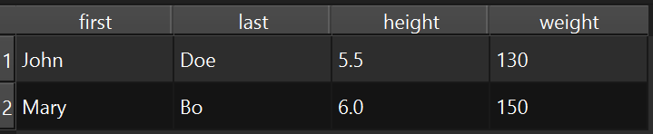
app = widgets.app()
data = dict(
first=["John", "Mary"],
last=["Doe", "Bo"],
height=[5.5, 6.0],
weight=[130, 150],
)
model = gui.StandardItemModel.from_dict(data)
table = widgets.TableView()
table.set_model(model)
table.proxifier.melt(id_columns=[0, 1])
table.show()
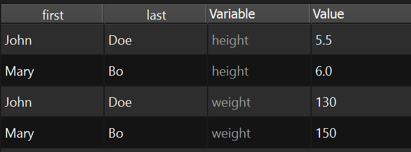
table.proxifier.melt(id_columns=[0, 1])
# equals
proxy = itemmodels.MeltProxyModel(id_columns=[0, 1])
proxy.set_source_model(table.model())
table.set_model(proxy)
Source code in prettyqt/itemmodels/proxies/meltproxymodel.py
10 11 12 13 14 15 16 17 18 19 20 21 22 23 24 25 26 27 28 29 30 31 32 33 34 35 36 37 38 39 40 41 42 43 44 45 46 47 48 49 50 51 52 53 54 55 56 57 58 59 60 61 62 63 64 65 66 67 68 69 70 71 72 73 74 75 76 77 78 79 80 81 82 83 84 85 86 87 88 89 90 91 92 93 94 95 96 97 98 99 100 101 102 103 104 105 106 107 108 109 110 111 112 113 114 115 116 117 118 119 120 121 122 123 124 125 126 127 128 129 130 131 132 133 134 135 136 137 138 139 140 141 142 143 144 145 146 147 148 149 150 151 152 153 154 155 156 157 158 159 160 161 162 163 164 165 166 167 168 169 170 171 172 173 174 175 176 177 178 179 180 181 182 183 184 185 186 187 188 189 190 191 192 193 194 195 196 197 198 199 200 201 202 203 204 205 206 207 208 209 210 211 212 213 214 215 216 217 218 219 220 221 222 223 224 225 226 227 228 229 230 231 232 233 234 235 236 237 238 239 240 | |
get_id_columns() -> list[int]
get_value_name() -> str
get_var_name() -> str
set_id_columns(columns: list[int])
set_value_name(name: str)
Set header for value column.
set_var_name(name: str)
Set header for variable column.
ModelIndexModel
Bases: ListMixin, AbstractTableModel
Table model for displaying a the data of a list of ModelIndexes.
Example:
# get indexes from some random model
my_model = ParentClassTreeModel(widgets.QWidget, show_mro=True)
indexes = list(my_model.iter_tree(fetch_more=True))
model = ModelIndexModel(indexes=indexes)
Source code in prettyqt/itemmodels/modelindexmodel.py
12 13 14 15 16 17 18 19 20 21 22 23 24 25 26 27 28 29 30 31 32 33 34 35 36 37 38 39 40 41 42 43 44 45 46 47 48 49 50 51 52 53 54 55 56 57 58 59 60 61 62 63 64 65 66 67 68 69 70 71 72 73 74 75 76 77 78 79 80 81 82 83 84 85 86 87 88 89 90 91 92 93 94 95 96 97 98 99 100 101 102 103 104 105 106 107 108 109 110 111 112 113 114 115 116 117 118 119 120 121 122 123 124 125 126 127 128 129 130 131 132 133 134 135 136 137 138 139 140 141 142 143 144 145 146 147 148 149 150 151 152 153 154 155 156 | |
ModelMixin
Bases: _ModelBase
Source code in prettyqt/itemmodels/modelmixin.py
flags(index: core.ModelIndex) -> constants.ItemFlag
Override for AbstractitemModel base method.
returns corresponding flags for cell of supplied index
Source code in prettyqt/itemmodels/modelmixin.py
ModuleInfoModel
Bases: TreeModel
Tree Model to display a module hierarchy (using pkgutil).
Source code in prettyqt/itemmodels/moduleinfomodel.py
MultiColumnFilterProxyModel
Bases: SortFilterProxyModel
A SortFilterProxyModel which filters based on multiple columns in one go.
This proxy uses seperate search term / values for each column in order to filter the source model, thus avoiding to layer proxy models in case you want to filter based on several columns. That way it is less demanding since filtering for all columns is done in one go.
This model is used by the FilterHeader widget in order to filter a table in one go, avoiding the need to layer multiple proxy models.
Example
proxy = itemmodels.MultiColumnFilterProxyModel()
proxy.set_source_model(model)
table.set_model(proxy)
table.show()
Source code in prettyqt/itemmodels/proxies/multicolumnfilterproxymodel.py
NestedItem
Source code in prettyqt/itemmodels/nesteditem.py
iter_tree(name: str | None = None, yield_self: bool = True, recursive: bool = True, level: int = 0, count: int = 0, assign_names: bool = True)
Yield children from bottom to top, yield self at end.
assigns dynamic vars count, level and dynamic name
Source code in prettyqt/itemmodels/nesteditem.py
row() -> int
Return row number.
returns row position of item inside parent`s children returns 0 if no parent available
Source code in prettyqt/itemmodels/nesteditem.py
ParentClassTreeModel
Bases: BaseClassTreeModel
Tree model to display the parent class tree of a python class.


Source code in prettyqt/itemmodels/classtreemodel.py
135 136 137 138 139 140 141 142 143 144 145 146 147 148 149 150 151 152 153 154 155 156 157 158 159 160 161 162 163 164 165 166 167 168 169 170 171 172 173 174 175 176 177 178 179 180 181 182 183 184 185 186 187 188 189 190 191 192 193 194 195 196 197 198 199 200 201 202 203 204 205 206 207 208 209 210 211 212 213 214 | |
get_show_mro() -> bool
set_show_mro(show: bool)
Toggles mro mode on or off.
Parameters:
| Name | Type | Description | Default |
|---|---|---|---|
show
|
bool
|
toggle mro mode on/off |
required |
Source code in prettyqt/itemmodels/classtreemodel.py
PredicateFilterProxyModel
Bases: SortFilterProxyModel
A simple filter proxy model with settable filter predicates.
Example:
Source code in prettyqt/itemmodels/proxies/predicatefilterproxymodel.py
ProxyMapper
Bases: Object
Class to map indexes / ItemSelections from one proxy to another.
Also handles cases like:
When mapping from 1_2 to 2_2, it will find the closest parent ("shared proxy" here), use mapToSource / mapSelectionFromSource until it gets there, and then mapFromSource / mapSelectionFromSource to get down to 2_2.mapper = ProxyMapper(proxy_1_2, proxy_2_1)
index = proxy_1_2.index(0, 0)
mapped_index = mapper.map_index(source=0, target=1, index)
Source code in prettyqt/itemmodels/proxies/proxymapper.py
map_index(source: int, target: int, index: core.ModelIndex) -> core.ModelIndex
Map index from source to target.
Source code in prettyqt/itemmodels/proxies/proxymapper.py
map_selection(source: int, target: int, selection: core.QItemSelection) -> core.QItemSelection
Map selection from source to target.
Source code in prettyqt/itemmodels/proxies/proxymapper.py
PythonObjectTreeModel
Bases: ColumnItemModel
Source code in prettyqt/itemmodels/pythonobjecttreemodel.py
302 303 304 305 306 307 308 309 310 311 312 313 314 315 316 317 318 319 320 321 322 323 324 325 326 327 328 329 330 331 332 333 334 335 336 337 338 339 340 341 342 343 344 345 346 347 348 349 350 351 352 353 354 355 356 357 358 359 360 361 362 363 364 365 366 367 368 369 370 371 372 373 374 375 376 377 378 379 380 381 382 383 384 385 386 387 388 389 390 391 392 393 394 395 396 397 398 399 400 401 402 403 404 405 406 407 408 409 410 411 412 413 414 415 416 417 418 419 420 421 422 423 424 425 426 427 428 429 430 431 432 433 434 435 436 437 438 439 440 441 442 443 444 445 446 447 448 449 450 451 452 | |
get_path_for_index(index: core.ModelIndex) -> str
Get the path for the object referenced by index.
Example:
Source code in prettyqt/itemmodels/pythonobjecttreemodel.py
refresh_tree()
Refresh the tree model from the underlying root object.
Keeps fetched / expanded nodes, emits dataChanged for all fetched rows.
Source code in prettyqt/itemmodels/pythonobjecttreemodel.py
QObjectPropertiesModel
Bases: AbstractTableModel
Source code in prettyqt/itemmodels/qobjectpropertiesmodel.py
11 12 13 14 15 16 17 18 19 20 21 22 23 24 25 26 27 28 29 30 31 32 33 34 35 36 37 38 39 40 41 42 43 44 45 46 47 48 49 50 51 52 53 54 55 56 57 58 59 60 61 62 63 64 65 66 67 68 69 70 71 72 73 74 75 76 77 78 79 80 81 82 83 84 85 86 87 88 89 90 91 92 93 94 95 96 97 98 99 100 101 102 103 104 105 106 107 108 109 110 111 112 113 114 115 116 117 118 119 120 121 122 123 124 125 126 127 128 129 130 131 132 133 134 135 136 137 138 139 140 141 142 143 144 145 146 147 148 149 150 151 152 153 154 155 156 157 158 159 160 | |
rowCount(parent: core.QModelIndex | None = None) -> int
Override for AbstractitemModel base method.
Source code in prettyqt/itemmodels/qobjectpropertiesmodel.py
RegexMatchesModel
Bases: AbstractTableModel
Model to display a list of re.Matches.
Source code in prettyqt/itemmodels/regexmatchesmodel.py
rowCount(parent: core.ModelIndex | None = None) -> int
Override for AbstractitemModel base method.
Source code in prettyqt/itemmodels/regexmatchesmodel.py
ShortcutsModel
Bases: ColumnTableModel
Model to display a list of gui.QShortcuts.
Source code in prettyqt/itemmodels/shortcutsmodel.py
SliceChangeFlagsProxyModel
Bases: SliceIdentityProxyModel
Proxy model to selectively change the ItemFlags of the source model.
table = widgets.TreeView()
data = dict(
first=["John", "Mary"],
last=["Doe", "Bo"],
height=[5.5, 6.0],
weight=[130, 150],
)
source_model = gui.StandardItemModel.from_dict(data)
table.set_model(source_model)
# table.proxifier.change_flags(enabled=False)

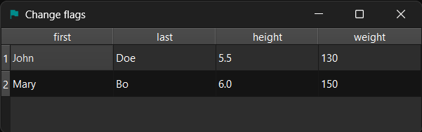
table = widgets.TreeView()
data = dict(
first=["John", "Mary"],
last=["Doe", "Bo"],
height=[5.5, 6.0],
weight=[130, 150],
)
source_model = gui.StandardItemModel.from_dict(data)
table.set_model(source_model)
table.proxifier.change_flags(enabled=False)

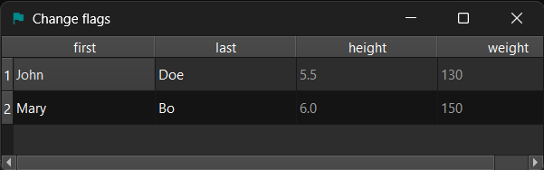
Supports changing all ItemRoles by passing keyword arguments.
Possible keyword arguments:
selectable: ItemFlag.ItemIsSelectable,editable: ItemFlag.ItemIsEditable,drag_enabled: ItemFlag.ItemIsDragEnabled,drop_enabled: ItemFlag.ItemIsDropEnabled,user_checkable: ItemFlag.ItemIsUserCheckable,enabled: ItemFlag.ItemIsEnabled,auto_tristate: ItemFlag.ItemIsAutoTristate,never_has_children: ItemFlag.ItemNeverHasChildren,user_tristate: ItemFlag.ItemIsUserTristate,
Example
model = MyModel()
table = widgets.TableView()
table.set_model(model)
table.proxifier[::2, 2:].change_flags(readable=False)
table.show()
or
indexer = (slice(None, None, 2), slice(2, None))
proxy = itemmodels.SliceChangeFlagsProxyModel(indexer=indexer, readable=False)
proxy.set_source_model(model)
table.set_model(proxy)
table.show()
Source code in prettyqt/itemmodels/proxies/slicechangeflagsproxymodel.py
9 10 11 12 13 14 15 16 17 18 19 20 21 22 23 24 25 26 27 28 29 30 31 32 33 34 35 36 37 38 39 40 41 42 43 44 45 46 47 48 49 50 51 52 53 54 55 56 57 58 59 60 61 62 63 64 65 66 67 68 69 70 71 72 73 74 75 76 77 78 79 80 81 82 83 84 85 86 87 88 89 90 91 92 93 94 95 96 97 98 99 100 101 102 103 104 105 106 107 108 109 110 111 112 113 114 115 116 117 118 119 120 121 122 123 124 125 126 127 128 129 130 131 132 133 134 135 136 137 138 139 | |
SliceChangeIconSizeProxyModel
Bases: SliceIdentityProxyModel
Proxy model which changes the icon size of the Decoration role.
Supports QColors, QPixmaps and QIcons in DecorationRole.
Example
model = MyModel()
table = widgets.TreeView()
table.set_model(model)
table[0].proxify.change_icon_size(size=20)
table.show()
# or
proxy = itemmodels.SliceFilterProxyModel(indexer=0, size=20)
proxy.set_source_model(model)
table.set_model(proxy)
table.show()
table = widgets.TreeView()
source_model = widgets.FileSystemModel()
...
table.set_model(source_model)
# table.proxifier.change_icon_size(size=(30, 30))

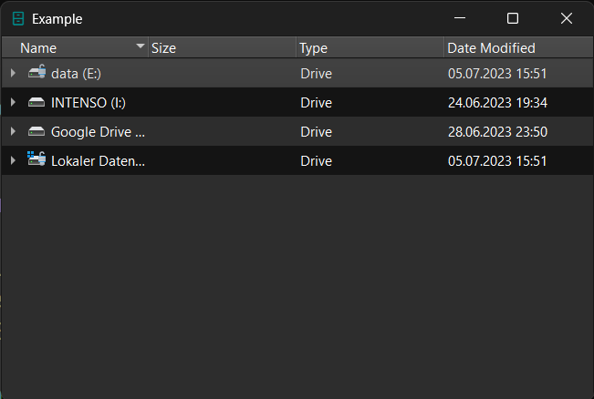
table = widgets.TreeView()
source_model = widgets.FileSystemModel()
...
table.set_model(source_model)
table.proxifier.change_icon_size(size=(30, 30))

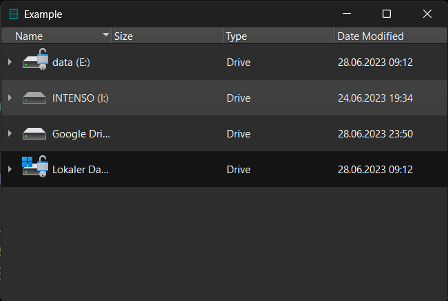
Source code in prettyqt/itemmodels/proxies/slicechangeiconsizeproxymodel.py
10 11 12 13 14 15 16 17 18 19 20 21 22 23 24 25 26 27 28 29 30 31 32 33 34 35 36 37 38 39 40 41 42 43 44 45 46 47 48 49 50 51 52 53 54 55 56 57 58 59 60 61 62 63 64 65 66 67 68 69 70 71 72 73 74 75 76 77 78 79 80 81 82 83 84 85 86 87 88 89 90 91 92 93 94 95 96 97 98 99 100 101 102 103 104 105 106 107 108 109 110 | |
SliceCheckableProxyModel
Bases: SliceIdentityProxyModel
Proxy model to make a model checkable.
Example
model = MyModel()
table = widgets.TableView()
table.set_model(model)
table.proxifier[::2, 2:].modify(xyz)
table.show()
# or
indexer = (slice(None, None, 2), slice(2, None))
proxy = itemmodels.SliceCheckableProxyModel(indexer=indexer)
proxy.set_source_model(model)
table.set_model(proxy)
table.show()
Source code in prettyqt/itemmodels/proxies/slicecheckableproxymodel.py
SliceCheckableTreeProxyModel
Bases: SliceIdentityProxyModel
Proxy model to make a tree model checkable.
In contrast to SliceCheckableProxyModel, any checkstate change is propagated to parent and child indexes. (child indexes will also get the new checkstate, parent indexes will become partially checked if needed.)
Example
model = MyModel()
table = widgets.TreeView()
table.set_model(model)
table.proxifier[:, 0].set_checkable(tree=True)
table.show()
# or
proxy = itemmodels.SliceCheckableTreeProxyModel(indexer=0)
proxy.set_source_model(model)
table.set_model(proxy)
table.show()
Source code in prettyqt/itemmodels/proxies/slicecheckableproxymodel.py
75 76 77 78 79 80 81 82 83 84 85 86 87 88 89 90 91 92 93 94 95 96 97 98 99 100 101 102 103 104 105 106 107 108 109 110 111 112 113 114 115 116 117 118 119 120 121 122 123 124 125 126 127 128 129 130 131 132 133 134 135 136 137 138 139 140 141 142 143 144 145 146 147 148 149 150 151 152 153 154 155 156 157 158 159 160 161 162 163 164 165 166 167 168 169 170 171 172 173 174 175 176 177 178 179 180 181 182 183 184 185 186 187 188 189 190 191 192 193 194 195 196 197 | |
set_checkstate(index: core.ModelIndex, state: constants.CheckState | None = None, recursive: bool = False)
Set the checkstate of given index (toggle if state is None).
If recursive is True, children get the same state and the parents are updated (partially checked if needed).
Source code in prettyqt/itemmodels/proxies/slicecheckableproxymodel.py
set_child_states(index: core.ModelIndex, state: constants.CheckState)
Set checkstate of all (already fetched) descendants.
Source code in prettyqt/itemmodels/proxies/slicecheckableproxymodel.py
set_parent_states(index: core.ModelIndex)
Update checkstate of all ancestors based on their direct children.
Source code in prettyqt/itemmodels/proxies/slicecheckableproxymodel.py
SliceColorCategoriesProxyModel
Bases: SliceIdentityProxyModel
Proxy model to apply coloring to categories.
Example
model = MyModel()
table = widgets.TableView()
table.set_model(model)
table[:, :3].proxify.color_categories()
table.show()
# or
indexer = (slice(None), slice(None, 3))
proxy = itemmodels.SliceColorCategoriesProxyModel(indexer=indexer)
proxy.set_source_model(model)
table.set_model(proxy)
table.show()
Source code in prettyqt/itemmodels/proxies/slicecolorcategoriesproxymodel.py
cast_to_str = core.Property(bool, is_casted_to_str, set_cast_to_str, doc='Cast values to string in order to color / group them')
class-attribute
instance-attribute
Cast all values to a string for deciding whether cells are in same category.
color_none = core.Property(bool, is_none_colored, set_none_colored, doc='Whether None-values should also get colored')
class-attribute
instance-attribute
Color ItemData with value None.
SliceColorValuesProxyModel
Bases: SliceIdentityProxyModel
Model to color cells of a numerical table based on their value.
By default, "high" numbers are colored red, "low" are colored green.
Possible modes are: * All: Highlight all cells within given slice * Column: Highlight all cells of same column as current if cell is within given slice. * Row: Highlight all cells of same row as current if cell is within given slice.
The last two modes have the advantage that nothing needs to be computed in advance, min/max values are calculated on-the fly.
Example
model = MyModel()
table = widgets.TableView()
table.set_model(model)
table[:, :3].proxify.color_values(mode="all")
table.show()
# or
indexer = (slice(None), slice(None, 3))
proxy = itemmodels.SliceColorValuesProxyModel(indexer=indexer)
proxy.set_source_model(model)
table.set_model(proxy)
table.show()
val_range = range(0, 100, 10)
data = dict(
a=random.sample(val_range, k=10),
b=random.sample(val_range, k=10),
c=random.sample(val_range, k=10),
)
model = gui.StandardItemModel.from_dict(data)
table = widgets.TableView()
table.set_model(model)
# table.proxifier[:, :].color_values()

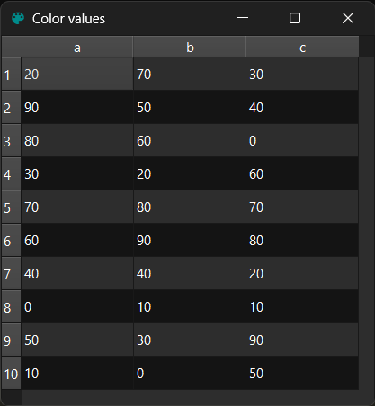
val_range = range(0, 100, 10)
data = dict(
a=random.sample(val_range, k=10),
b=random.sample(val_range, k=10),
c=random.sample(val_range, k=10),
)
model = gui.StandardItemModel.from_dict(data)
table = widgets.TableView()
table.set_model(model)
table.proxifier[:, :].color_values()

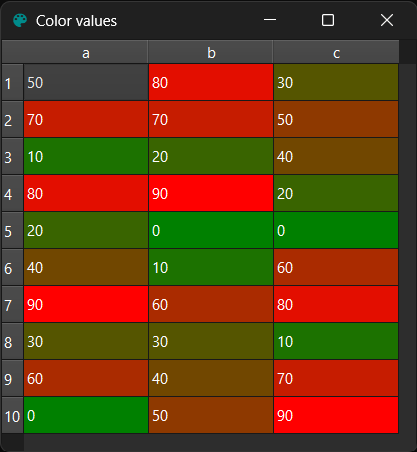
Source code in prettyqt/itemmodels/proxies/slicecolorvaluesproxymodel.py
34 35 36 37 38 39 40 41 42 43 44 45 46 47 48 49 50 51 52 53 54 55 56 57 58 59 60 61 62 63 64 65 66 67 68 69 70 71 72 73 74 75 76 77 78 79 80 81 82 83 84 85 86 87 88 89 90 91 92 93 94 95 96 97 98 99 100 101 102 103 104 105 106 107 108 109 110 111 112 113 114 115 116 117 118 119 120 121 122 123 124 125 126 127 128 129 130 131 132 133 134 135 136 137 138 139 140 141 142 143 144 145 146 147 148 149 150 151 152 153 154 155 156 157 158 159 160 161 162 163 164 165 166 167 168 169 170 171 172 173 174 175 176 177 178 179 180 181 182 183 184 185 186 187 188 189 190 191 192 193 194 195 196 197 198 199 200 201 202 203 204 205 206 207 208 209 210 211 212 213 214 | |
SliceDisplayTextProxyModel
Bases: SliceIdentityProxyModel
Proxy model to convert and format non-str values for the DisplayRole.
Usually, formatting of numbers etc is done by the ItemDelegate. By moving the formatting into a proxy layer instead, we can keep the ItemDelegate spot free for other stuff.
Information about string formatting:
https://docs.python.org/3/library/string.html#format-specification-mini-language
Example
model = MyModel()
table = widgets.TableView()
table.set_model(model)
table[:, :3].proxify.format_text(int_format="{:0>2d}")
table.show()
# or
indexer = (slice(None), slice(None, 3))
proxy = SliceDisplayTextProxyModel(indexer=indexer, float_format="{:.4f}")
proxy.set_source_model(model)
table.set_model(proxy)
table.show()
Source code in prettyqt/itemmodels/proxies/slicedisplaytextproxymodel.py
10 11 12 13 14 15 16 17 18 19 20 21 22 23 24 25 26 27 28 29 30 31 32 33 34 35 36 37 38 39 40 41 42 43 44 45 46 47 48 49 50 51 52 53 54 55 56 57 58 59 60 61 62 63 64 65 66 67 68 69 70 71 72 73 74 75 76 77 78 79 80 81 82 83 84 85 86 87 88 89 90 91 92 93 94 95 96 97 98 99 100 101 102 103 104 105 106 107 108 109 110 111 112 113 114 115 116 117 118 119 120 121 122 123 124 125 126 127 128 129 130 131 132 133 134 135 136 | |
SliceFilterProxyModel
Bases: FlatProxyMixin, SliceIdentityProxyModel
Proxy model to filter an item view based on python slicing syntax.
Since slicing operations are bijective, this model can filter without looping through rows or columns. Thus, this should perform much better than a SortFilterProxyModel with a column filter. (O(1) instead of O(n))
Example
To filter out every second row, and cut off the the first two columns:
model = MyModel()
table = widgets.TableView()
table.set_model(model)
table.proxifier[::2, 2:].filter()
table.show()
# or
indexer = (slice(None, None, 2), slice(2, None))
proxy = itemmodels.SliceFilterProxyModel(indexer=indexer)
proxy.set_source_model(model)
table.set_model(proxy)
table.show()
Source code in prettyqt/itemmodels/proxies/slicefilterproxymodel.py
5 6 7 8 9 10 11 12 13 14 15 16 17 18 19 20 21 22 23 24 25 26 27 28 29 30 31 32 33 34 35 36 37 38 39 40 41 42 43 44 45 46 47 48 49 50 51 52 53 54 55 56 57 58 59 60 61 62 63 64 65 66 67 68 69 70 71 72 73 74 75 76 77 78 79 80 81 82 83 84 85 86 87 88 89 90 91 92 93 94 95 96 97 98 99 100 101 102 103 104 105 106 107 108 109 110 111 112 113 114 115 116 117 118 119 120 121 | |
headerData(section: int, orientation: constants.Orientation, role: constants.ItemDataRole = constants.DISPLAY_ROLE)
Map header data to proxy by calculating position from slice values.
source pos = slice start + proxy pos * slice step)
Source code in prettyqt/itemmodels/proxies/slicefilterproxymodel.py
mapFromSource(source_index: core.ModelIndex) -> core.ModelIndex
Map index from source by calculating position based on slice values.
proxy pos = source pos - slice start / slice step
Source code in prettyqt/itemmodels/proxies/slicefilterproxymodel.py
mapToSource(proxy_idx: core.ModelIndex) -> core.ModelIndex
Map index to source by calculating position from slice values.
source pos = slice start + proxy pos * slice step)
Source code in prettyqt/itemmodels/proxies/slicefilterproxymodel.py
SliceHighlightCurrentProxyModel
Bases: SliceIdentityProxyModel
Proxy model which highlights all cells with same data as current index.
Highlights all cells with same content in given role as currently focused cell with a user-specified color.
Possible modes are:
all: Highlight all cells with same value.column: Highlight all cells with same value and same column as current.row: Highlight all cells with same value and same row as current.
dct = dict(
a=["a", "b", "a", "b"],
b=["a", "b", "a", "b"],
c=["a", "b", "a", "b"],
d=["b", "a", "b", "a"],
e=["a", "b", "a", "a"],
)
model = gui.StandardItemModel.from_dict(dct)
table = widgets.TableView()
table.set_model(model)
# apply proxy to every 2nd column
# table.proxifier[:, ::2].highlight_current(mode="column")

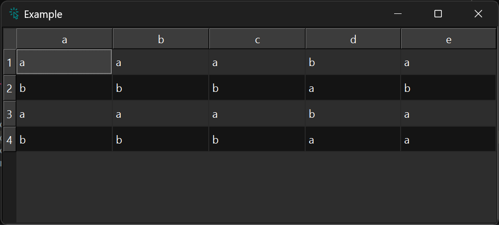
dct = dict(
a=["a", "b", "a", "b"],
b=["a", "b", "a", "b"],
c=["a", "b", "a", "b"],
d=["b", "a", "b", "a"],
e=["a", "b", "a", "a"],
)
model = gui.StandardItemModel.from_dict(dct)
table = widgets.TableView()
table.set_model(model)
# apply proxy to every 2nd column
table.proxifier[:, ::2].highlight_current(mode="row")

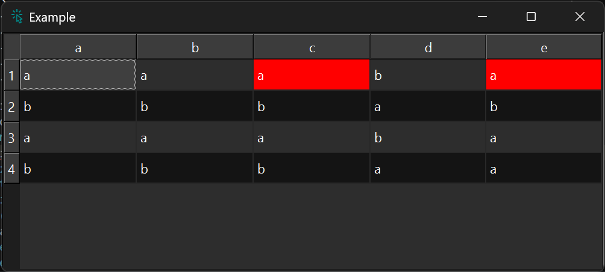
dct = dict(
a=["a", "b", "a", "b"],
b=["a", "b", "a", "b"],
c=["a", "b", "a", "b"],
d=["b", "a", "b", "a"],
e=["a", "b", "a", "a"],
)
model = gui.StandardItemModel.from_dict(dct)
table = widgets.TableView()
table.set_model(model)
# apply proxy to every 2nd column
table.proxifier[:, ::2].highlight_current(mode="column")

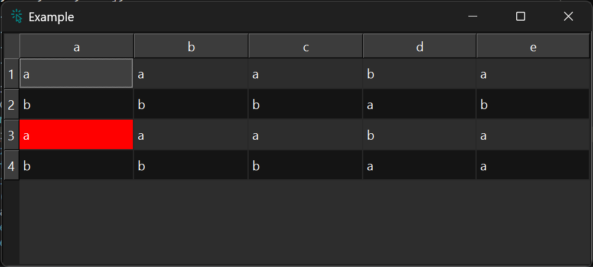
dct = dict(
a=["a", "b", "a", "b"],
b=["a", "b", "a", "b"],
c=["a", "b", "a", "b"],
d=["b", "a", "b", "a"],
e=["a", "b", "a", "a"],
)
model = gui.StandardItemModel.from_dict(dct)
table = widgets.TableView()
table.set_model(model)
# apply proxy to every 2nd column
table.proxifier[:, ::2].highlight_current(mode="all")

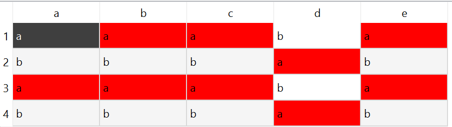
Example
model = MyModel()
table = widgets.TableView()
table.set_model(model)
table[:, :3].proxify.highlight_current(mode="all")
table.show()
# or
indexer = (slice(None), slice(None, 3))
proxy = itemmodels.SliceFilterProxyModel(indexer=indexer)
proxy.set_source_model(model)
table.set_model(proxy)
table.selectionModel().currentChanged.connect(proxy.highlight_index)
table.show()
Source code in prettyqt/itemmodels/proxies/slicehighlightcurrentproxymodel.py
15 16 17 18 19 20 21 22 23 24 25 26 27 28 29 30 31 32 33 34 35 36 37 38 39 40 41 42 43 44 45 46 47 48 49 50 51 52 53 54 55 56 57 58 59 60 61 62 63 64 65 66 67 68 69 70 71 72 73 74 75 76 77 78 79 80 81 82 83 84 85 86 87 88 89 90 91 92 93 94 95 96 97 98 99 100 101 102 103 104 105 106 107 108 109 110 111 112 113 114 115 116 117 118 119 120 121 122 123 124 125 126 127 128 129 130 131 132 133 134 135 136 137 138 139 140 141 142 143 144 145 146 147 148 149 150 151 152 153 154 155 156 157 158 159 160 161 162 163 164 165 166 167 168 169 170 171 172 173 174 175 176 177 178 179 180 181 182 183 184 185 186 187 188 189 190 191 192 193 194 195 196 197 198 199 200 201 202 203 204 205 206 207 208 209 210 211 212 213 214 215 216 217 218 219 220 221 222 223 224 225 226 227 228 229 230 231 232 233 234 235 236 237 238 239 240 241 242 243 | |
get_highlight_color() -> QtGui.QColor
get_highlight_mode() -> HighlightModeStr
get_highlight_role() -> constants.ItemDataRole
set_highlight_color(color: datatypes.ColorType)
set_highlight_mode(mode: HighlightModeStr)
SliceIdentityProxyModel
Bases: IdentityProxyModel
Base model for slice proxy models.
By itself, this proxy does nothing.
It just provides all needed helper functions to deal with slices.
indexer_contains should be just by subclasses in order to check whether the proxy
should be applied.
Source code in prettyqt/itemmodels/proxies/sliceidentityproxymodel.py
9 10 11 12 13 14 15 16 17 18 19 20 21 22 23 24 25 26 27 28 29 30 31 32 33 34 35 36 37 38 39 40 41 42 43 44 45 46 47 48 49 50 51 52 53 54 55 56 57 58 59 60 61 62 63 64 65 66 67 68 69 70 71 72 73 74 75 76 77 78 79 80 81 82 83 84 85 86 87 88 89 90 91 92 93 94 95 96 97 98 99 100 101 102 103 104 105 106 107 108 109 110 111 112 113 114 115 116 117 118 119 120 121 122 123 124 125 126 127 128 129 130 131 132 133 134 135 136 137 138 139 140 141 142 143 144 145 146 147 148 149 150 151 152 153 154 155 156 157 158 159 160 161 162 163 | |
get_column_range() -> range
Return a range for the column slice with valid start / stop / step values.
Source code in prettyqt/itemmodels/proxies/sliceidentityproxymodel.py
get_column_tuple() -> tuple[int | None, int | None, int | None]
Get tuple representation of the column slice.
get_row_range(parent: core.ModelIndex | None = None) -> range
Return a range for the row slice with valid start / stop / step values.
Parameters:
| Name | Type | Description | Default |
|---|---|---|---|
parent
|
ModelIndex | None
|
source parent index to get the range for (default: root) |
None
|
Source code in prettyqt/itemmodels/proxies/sliceidentityproxymodel.py
get_row_tuple() -> tuple[int | None, int | None, int | None]
Get tuple representation of the row slice.
indexer_contains(index: core.ModelIndex | tuple[int, int]) -> bool
Check whether given ModelIndex is included in our Indexer.
Source code in prettyqt/itemmodels/proxies/sliceidentityproxymodel.py
position_in_column_slice(col: int) -> int
Can be interpreted as slice.index(col) if slice would be a list.
position_in_row_slice(row: int, parent: core.ModelIndex | None = None) -> int
Can be interpreted as slice.index(row) if slice would be a list.
set_column_slice(value: slice | int | tuple[int | None, int | None, int | None] | None)
Throw anything at this method in order to set the column slice.
Source code in prettyqt/itemmodels/proxies/sliceidentityproxymodel.py
set_indexer(indexer)
Takes basically anything which is common to use for getitem.
Source code in prettyqt/itemmodels/proxies/sliceidentityproxymodel.py
set_row_slice(value: slice | int | tuple[int | None, int | None, int | None] | None)
Throw anything at this method in order to set the row slice.
Source code in prettyqt/itemmodels/proxies/sliceidentityproxymodel.py
update_slice_boundaries(sl: slice, count: int) -> slice
SliceMapRoleProxyModel
Bases: SliceIdentityProxyModel
Proxy model for mapping one role to another.
Mapping can be changed by passing a dictionary with source role as key and target_role as value. Py passing an optional converter function, values which are mapped can be modified.
Example
source_model = FsSpecTreemodel("file")
table = widgets.TableView()
mapping = {source_model.Roles.ProtocolPathRole: constants.DISPLAY_ROLE}
model = SliceMapRoleProxyModel(mapping, indexer=0, parent=table)
model.setSourceModel(source_model)
table.set_model(model)
table.show()
# or
table.proxifier.map_role(source_model.Roles.ProtocolPathRole, constants.DISPLAY_ROLE)
Source code in prettyqt/itemmodels/proxies/slicemaproleproxymodel.py
SliceToMarkdownProxyModel
Bases: SliceIdentityProxyModel
Proxy model which transforms cell contents to markdown.
Mainly used for documentation files. Text is formatted based on FontRole, Checkstate role, etc.
Source code in prettyqt/itemmodels/proxies/slicetomarkdownproxymodel.py
SliceValueTransformationProxyModel
Bases: SliceIdentityProxyModel
A proxy model which transforms cell contents based on a Callable.
Example:
model = MyModel()
table = widgets.TableView()
table.set_model(model)
table.proxifier[::2, 2:].modify(xyz)
table.show()
or
indexer = (slice(None, None, 2), slice(2, None))
proxy = itemmodels.SliceValueTransformationProxyModel(indexer=indexer)
proxy.set_source_model(model)
proxy.add_transformer(lambda x: x + "something", selector=lambda x: "abc" in x)
table.set_model(proxy)
table.show()
Source code in prettyqt/itemmodels/proxies/slicevaluetransformationproxymodel.py
add_transformer(fn: Callable[[Any], Any], role: constants.ItemDataRole = constants.DISPLAY_ROLE, selector: Callable[[Any], bool] | None = None, selector_role: constants.ItemDataRole = constants.DISPLAY_ROLE)
Add a transformer for given role.
If a selector callable is given, the transformer will only be applied if the selector returns True. The selector receives the content of given data role as an argument.
Parameters:
| Name | Type | Description | Default |
|---|---|---|---|
fn
|
Callable[[Any], Any]
|
Callable to transform data of given role |
required |
role
|
ItemDataRole
|
Data role to transform |
DISPLAY_ROLE
|
selector
|
Callable[[Any], bool] | None
|
Callable to filter the indexes which should be transformed |
None
|
selector_role
|
ItemDataRole
|
Role to use for the selector callable |
DISPLAY_ROLE
|
Source code in prettyqt/itemmodels/proxies/slicevaluetransformationproxymodel.py
StorageInfoModel
Bases: ColumnTableModel
Model to display a list of core.QStorageInfos.
Source code in prettyqt/itemmodels/storageinfomodel.py
SubClassTreeModel
Bases: BaseClassTreeModel
Model to display the subclass tree of a python class.
from prettyqt import itemmodels, widgets
app = widgets.app()
widget = widgets.TreeView()
model = itemmodels.SubClassTreeModel(core.AbstractItemModelMixin)
widget.set_model(model)
widget.show()
Source code in prettyqt/itemmodels/classtreemodel.py
SubsetFilterProxyModel
Bases: SortFilterProxyModel
A FilterProxyModel to filter based on slices, ranges, indexes or Callables.
Example
proxy = itemmodels.SubsetFilterProxyModel()
proxy.set_source_model(model)
table.set_model(proxy)
table.show()
!!! note If you only need filtering based on slices or a single column / row, the SliceFilterProxymodel should be preferred for performance reasons.
Source code in prettyqt/itemmodels/proxies/subsetfilterproxymodel.py
TableToListProxyModel
Bases: FlatProxyModel
Proxy model to flatten a table to a list.
Reshapes a table by concatenating all columns into one large column, so that the new rowCount equals to sourceModel rowCount * sourceModel columnCount. If a verticalHeader is available, it will show the original position of the cell.
data = dict(
first=["John", "Mary"],
last=["Doe", "Bo"],
height=[5.5, 6.0],
weight=[130, 150],
)
model = gui.StandardItemModel.from_dict(data)
table = widgets.TableView()
table.set_model(model)
# table.proxifier.to_list()
table.show()

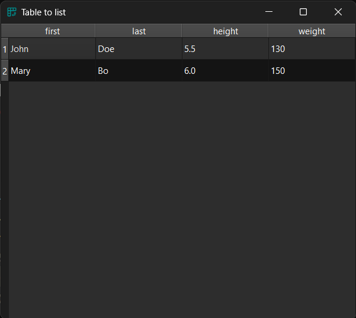
data = dict(
first=["John", "Mary"],
last=["Doe", "Bo"],
height=[5.5, 6.0],
weight=[130, 150],
)
model = gui.StandardItemModel.from_dict(data)
table = widgets.TableView()
table.set_model(model)
table.proxifier.to_list()
table.show()

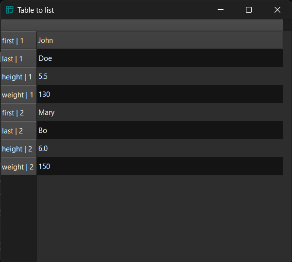
Source code in prettyqt/itemmodels/proxies/tabletolistproxymodel.py
5 6 7 8 9 10 11 12 13 14 15 16 17 18 19 20 21 22 23 24 25 26 27 28 29 30 31 32 33 34 35 36 37 38 39 40 41 42 43 44 45 46 47 48 49 50 51 52 53 54 55 56 57 58 59 60 61 62 63 64 65 66 67 68 69 70 71 72 73 74 75 76 77 78 79 80 81 82 83 84 85 86 87 88 89 90 91 92 93 94 95 96 97 98 99 100 101 102 103 104 105 106 107 108 109 110 111 112 113 114 115 116 117 118 119 120 121 122 123 124 125 126 127 128 129 130 131 132 133 134 135 136 137 138 139 140 141 142 143 144 145 146 | |
TreeModel
Bases: AbstractItemModel
TreeModel which is used as a base for most TreeModels implemented.
Tree gets dynamically populated whenever the the indexes get "expanded".
basically, only 2 methods need to be defined in order to build the tree:
def _fetch_object_children(self, TreeModel.TreeItem) -> list[TreeModel.TreeItem]: ...
def _has_children(self, TreeModel.TreeItem) -> bool: ...
Subclasses can override TreeModel.TreeItem if a child TreeItem class should be used for the root.
Source code in prettyqt/itemmodels/treemodel.py
21 22 23 24 25 26 27 28 29 30 31 32 33 34 35 36 37 38 39 40 41 42 43 44 45 46 47 48 49 50 51 52 53 54 55 56 57 58 59 60 61 62 63 64 65 66 67 68 69 70 71 72 73 74 75 76 77 78 79 80 81 82 83 84 85 86 87 88 89 90 91 92 93 94 95 96 97 98 99 100 101 102 103 104 105 106 107 108 109 110 111 112 113 114 115 116 117 118 119 120 121 122 123 124 125 126 127 128 129 130 131 132 133 134 135 136 137 138 139 140 141 142 143 144 145 146 147 148 149 150 151 152 153 154 155 156 157 158 159 160 161 162 163 164 165 166 167 168 169 | |
show_root: bool
property
Return True if the inspected node is visible.
In that case an invisible root node has been added.
fetchMore(parent: core.ModelIndex | None = None)
Fetch the children given the model index of a parent node.
Adds the children to the parent.
Source code in prettyqt/itemmodels/treemodel.py
TupleTreeModel
Bases: TreeModel
Base Tree Model to display a dict[tuple[Any], str] data structure.
The dictionary keys are tuples of path parts, like ("path", "to", "something")
mapping = {("a",): "test2", ("a", "b"): "test", ("a", "b", "c"): "test3"}
model = TupleTreeModel(mapping)
table = widgets.TreeView()
table.set_model(model)
table.show()
Source code in prettyqt/itemmodels/tupletreemodel.py
UnmeltProxyModel
Bases: FlatProxyModel
Proxy model to pivot a table from long format to wide format.
Reverses the MeltProxyModel operation.
app = widgets.app()
data = {
"ID": ["A", "A", "B", "B"] * 2,
"Variable": ["height", "weight"] * 4,
"Value": [5.5, 130, 6.0, 150, 5.7, 140, 5.9, 145],
}
model = gui.StandardItemModel.from_dict(data)
table = widgets.TableView()
table.set_model(model)
table.proxifier.unmelt(id_columns=[0], variable_column=1, value_column=2)
table.show()
Source code in prettyqt/itemmodels/proxies/unmeltproxymodel.py
11 12 13 14 15 16 17 18 19 20 21 22 23 24 25 26 27 28 29 30 31 32 33 34 35 36 37 38 39 40 41 42 43 44 45 46 47 48 49 50 51 52 53 54 55 56 57 58 59 60 61 62 63 64 65 66 67 68 69 70 71 72 73 74 75 76 77 78 79 80 81 82 83 84 85 86 87 88 89 90 91 92 93 94 95 96 97 98 99 100 101 102 103 104 105 106 107 108 109 110 111 112 113 114 115 116 117 118 119 120 121 122 123 124 125 126 127 128 129 130 131 132 133 134 135 136 137 138 139 140 141 142 143 144 145 146 147 148 149 150 151 152 153 154 155 156 157 158 159 160 161 162 163 164 165 166 167 168 169 170 171 172 173 174 | |
__init__(id_columns: list[int], variable_column: int, value_column: int, **kwargs)
Initialize UnmeltProxyModel.
Parameters:
| Name | Type | Description | Default |
|---|---|---|---|
id_columns
|
list[int]
|
List of column indices that identify unique rows |
required |
variable_column
|
int
|
Column index containing variable names |
required |
value_column
|
int
|
Column index containing values |
required |
kwargs
|
Additional keyword arguments. |
{}
|
Source code in prettyqt/itemmodels/proxies/unmeltproxymodel.py
columnCount(parent: core.ModelIndex | None = None) -> int
Return number of columns in the model.
Source code in prettyqt/itemmodels/proxies/unmeltproxymodel.py
data(index: core.ModelIndex, role: constants.ItemDataRole = constants.DISPLAY_ROLE) -> Any
Return data for given index and role.
Source code in prettyqt/itemmodels/proxies/unmeltproxymodel.py
headerData(section: int, orientation: constants.Orientation, role: constants.ItemDataRole = constants.DISPLAY_ROLE) -> Any
Return header data for given section and orientation.
Source code in prettyqt/itemmodels/proxies/unmeltproxymodel.py
mapFromSource(source_index: core.ModelIndex) -> core.ModelIndex
Map source index to proxy index.
Source code in prettyqt/itemmodels/proxies/unmeltproxymodel.py
mapToSource(proxy_index: core.ModelIndex) -> core.ModelIndex
Map proxy index to source index.
Source code in prettyqt/itemmodels/proxies/unmeltproxymodel.py
rowCount(parent: core.ModelIndex | None = None) -> int
Return number of rows in the model.
ValueFilterProxyModel
Bases: SortFilterProxyModel
Proxy model for filtering based on non-str values.
Sometimes it is needed to filter for non-str values, especially when it is required to filter based on a different role than DisplayRole.
Same as the Qt QSortFilterProxyModel, this proxy respects the filterRole and filterKeyColumn properties.
Source code in prettyqt/itemmodels/proxies/valuefilterproxymodel.py
get_filter_value()
WidgetHierarchyModel
Bases: BaseHierarchyModel
Tree model showing the child tree of a QObject.
Source code in prettyqt/itemmodels/widgethierarchymodel.py
WidgetsDetailsModel
Bases: AbstractTableModel
Source code in prettyqt/itemmodels/widgetsdetailsmodel.py
rowCount(parent: core.ModelIndex | None = None) -> int
Override for AbstractitemModel base method.
XmlModel
Bases: BaseXmlModel
Xml model for the builtin ElementTree. Child items are created lazily.
Model cant be modified, that only really makes sense for a full DOM implementation.